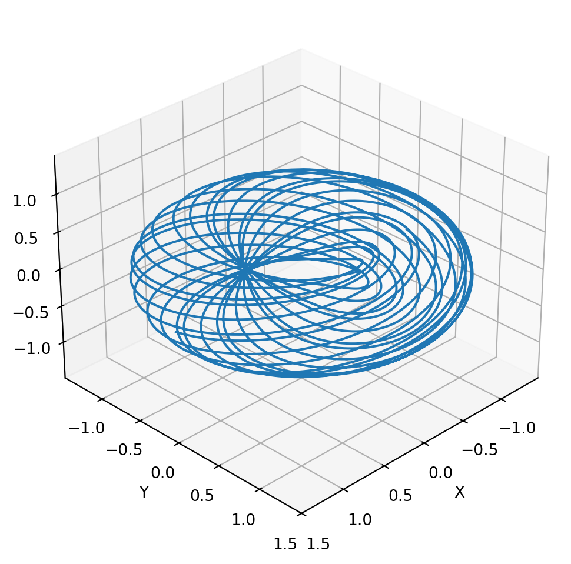

Code
import numpy as np
import matplotlib.pyplot as plt
from matplotlib.cm import hsvFantastic Manifolds and Where to Find Them
sun123zxy
June 2, 2025
\[ \gamma(t) := (e^{2\pi i t}, e^{2 \pi i \alpha t}) \] is an \(\mathbb R \to \mathbb T^2 \subset \mathbb C^2\) immersion (Note that it’s injective!). The corresponding immersed \(1\)-submanifold is a Lie subgroup that is dense in \(\mathbb T^2\) (by Dirichlet’s approximation theorem), which confirms that it is not an embedded submanifold. For more information, see [1, Example 4.20].
Below is a plot of this curve taking \(\alpha = \sqrt 2\). The torus is embedded in \(\mathbb R^3\). \[ \Phi(t) := \left( \cos( \alpha t ) \left( 1 + \frac{1}{2} \cos t \right), \sin( \alpha t ) \left( 1 + \frac{1}{2} \cos t \right), \frac{1}{2} \sin t \right) \]
# Define the parametric equations
def phi(t):
x = np.cos(np.sqrt(2) * t) * (1 + 0.5 * np.cos(t))
y = np.sin(np.sqrt(2) * t) * (1 + 0.5 * np.cos(t))
z = 0.5 * np.sin(t)
return x, y, z
# Generate t values
t = np.linspace(0, 100, 10000)
x, y, z = phi(t)
# Create figure with transparent background
fig = plt.figure(facecolor='none') # <-- Transparent figure
ax = fig.add_subplot(111, projection='3d', facecolor='none') # <-- Transparent axes
# Plot the curve
ax.plot(x, y, z)
# Manually set equal aspect ratio
max_range = np.array([x.max()-x.min(), y.max()-y.min(), z.max()-z.min()]).max() * 0.5
mid_x = (x.max() + x.min()) * 0.5
mid_y = (y.max() + y.min()) * 0.5
mid_z = (z.max() + z.min()) * 0.5
ax.set_xlim(mid_x - max_range, mid_x + max_range)
ax.set_ylim(mid_y - max_range, mid_y + max_range)
ax.set_zlim(mid_z - max_range, mid_z + max_range)
# Labels and title (customize colors for visibility)
ax.set_xlabel('X') # Ensure labels are visible
ax.set_ylabel('Y')
ax.set_zlabel('Z')
# Adjust view
ax.view_init(elev=30, azim=45)
plt.tight_layout()
plt.show()
Recommended online meterials:
Recall the three equivalent descriptions of \(\mathrm{SU}(2)\): \[ \begin{matrix} \mathbb T^3 & \to & \mathbb S^3 \subset \mathbb H & \to & \mathrm{SU}(2) \\ (\theta,\varphi,\psi) & \substack{ a = \cos \theta \cos \varphi \\ b = \cos \theta \sin \varphi \\ c = \sin \theta \cos \psi \\ d = \sin \theta \sin \psi} & a \boldsymbol 1 + b \boldsymbol i + c \boldsymbol j + d \boldsymbol k & \substack{z=a+bi \\ w=c+di} & \begin{bmatrix}z & w \\ -\bar w & \bar z\end{bmatrix} \\ & & a^2+b^2+c^2+d^2 = 1 & & |z|^2 + |w|^2 = 1 \\ \end{matrix} \] More of these relationships can be found in [2, Ch. 1–2]. A nice figure of the Hopf fibration can be found in [2, Secs. 2.2, figure 2.2]. The circle decomposition of \(\mathbb S^3\) is just the coset partition of \(\mathbb S^3 \subset \mathbb H\) by the subgroup \(\langle a + b \boldsymbol i : a^2+b^2=1 \rangle\).
Fibre bundle description: TODO